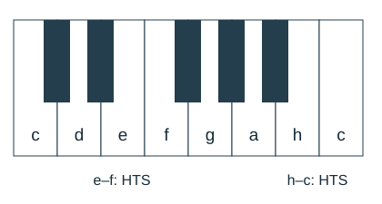

Ganzton, Halbton und Vorzeichen
Mit einem KI-Tutor lernen
Ein KI-Tutor erklärt dir diese Seite und hilft dir bei den Übungen. Wähl deinen Assistenten:
Mit Claude öffnen Mit ChatGPT öffnen Mit Mistral Vibe öffnen
Du nutzt dein eigenes Konto beim Anbieter. Der Assistent ist kein Angebot von lernapps.net: lernapps liefert nur Inhalte und Übungen. Die Wahl gilt für alle Seiten, nur auf diesem Gerät.
Die kleinen Schritte
- Halbtonschritt
Der Abstand zwischen zwei unmittelbar benachbarten Klaviertasten, schwarze Tasten mitgezählt.
Ein Ganztonschritt besteht aus zwei Halbtonschritten. Zwischen zwei weißen Tasten kann ein Halbton oder ein Ganzton liegen. Schau, ob eine schwarze Taste dazwischenliegt.

Zwischen e und f sowie h und c liegt keine schwarze Taste: Das sind Halbtonschritte.
Quelle: eigene Zeichnung. Lizenz: CC-BY-4.0.Vorzeichen verändern die Tonhöhe
♯ erhöht einen Ton um einen Halbton: f wird fis, c wird cis. ♭ erniedrigt einen Ton um einen Halbton: e wird es, a wird as.
Achtung: H und B
Im Deutschen wird aus h durch Erniedrigen b. B ist also ein anderer Ton als H. Ein Vorzeichen vor einer einzelnen Note gilt innerhalb des Takts weiter für denselben Ton in derselben Oktavlage; am Taktstrich endet diese Wirkung. Vorzeichen direkt am Schlüssel gelten für das ganze Stück, bis sie geändert werden.
Von c nach d gehst du über cis: c–cis und cis–d sind zwei Halbtonschritte. Von e nach f ist es nur einer.
Übung
Übung
Lösung
Richtige Antwort: e – f – 1 Halbtonschritt; c – d – 2 Halbtonschritte; c – es – 3 Halbtonschritte
Zwischen e und f liegt kein weiterer Ton. Von c nach d sind es zwei Halbtöne; von c über cis und d nach es drei.
Mehr dazu:
Übung
Lösung
B richtige Antwort
Das deutsche B ist das erniedrigte H.
His
His entsteht beim Erhöhen von H, nicht beim Erniedrigen.
H
H ist der unveränderte Stammton.
H wird mit einem b-Vorzeichen zu B.
Mehr dazu:
Übung
Lösung
Richtige Antwort: 2
Ein Ganzton ist die Summe aus zwei Halbtonschritten.
Mehr dazu: